Uso del sistema desde el celular: turno, pendientes, supervisiones en campo y remotas, validación de cancelaciones, rescates, cuadrillas y observaciones.
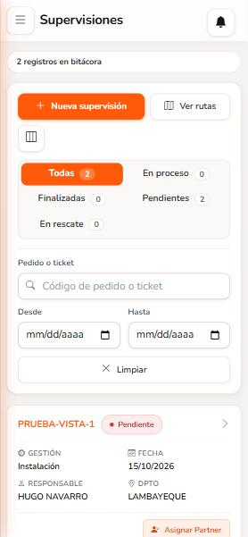
Versión del sistema 0.10.1Octubre de 2026Uso interno · WIN
Contenido
1Ingresar al sistema
2El menú
3Mi turno
4Tus supervisiones y la bolsa de pendientes
5Registrar una supervisión nueva
6Supervisión remota (videollamada)
7Validar una cancelación cargada
8Rescate de una pendiente
9Asignar una pendiente a un partner
10Cuadrillas
11Observaciones
12Mi información y contraseña
13Preguntas frecuentes
Las tres reglas de oro
Sin turno iniciado no puedes registrar supervisiones. Empieza siempre por Mi turno.
El GPS del celular debe estar encendido y con permiso de ubicación para el sistema.
Solo puedes tener una supervisión en proceso a la vez. Finalízala antes de iniciar otra (los rescates no cuentan).
ConsejoGuarda la dirección del sistema en la pantalla de inicio de tu celular (menú del navegador › Agregar a la pantalla de inicio) para abrirlo como una aplicación.
1Ingresar al sistema
Abre la dirección del sistema en el navegador de tu celular.
En Usuario escribe tu DNI, tu usuario o tu correo.
Escribe tu contraseña. Con Ver puedes comprobar lo que escribiste.
Toca Iniciar sesión.
Primer ingreso
Si el administrador te dio la contraseña, el sistema te pedirá crear la tuya antes de continuar: escribe la que te dieron, luego la nueva (mínimo 10 caracteres, con letras y números) y repítela. Una barra te indica si es Débil, Aceptable, Buena o Fuerte.
Cuidado con los intentosSi escribes mal la contraseña 3 veces seguidas, tu usuario se bloquea y solo el administrador puede liberarlo. Si la olvidaste, pídele que la restablezca.
Permiso de ubicaciónAl entrar, el sistema revisa tu GPS. Si ves "Permite el acceso a tu ubicación" o "Enciende el GPS", sigue los pasos que muestra y toca Reintentar.
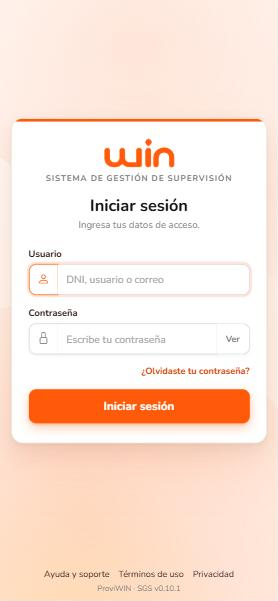
Pantalla de ingreso
2El menú
Toca el botón ☰ (arriba a la izquierda) para abrir el menú y la × para cerrarlo. Las opciones con flecha son secciones: se despliegan con un toque.
Opción
Para qué sirve
Mi turno
Iniciar y finalizar tu jornada y registrar almuerzo, reuniones, capacitación o trabajo remoto.
Supervisiones › Supervisiones
Tu lista de trabajo: pendientes de tu zona, en proceso, finalizadas y rescates.
Supervisiones › Cuadrillas
Cada técnico líder con su técnico de apoyo (T2) y su vehículo.
Observaciones
Hallazgos registrados, con descargos y plazos.
Mi información
Tus datos, tu foto, tu actividad y tu contraseña.
Cerrar sesión
Salir del sistema.
Arriba de cada pantalla verás su nombre y la campana de avisos (pendientes nuevas, propuestas de rescate y otros).
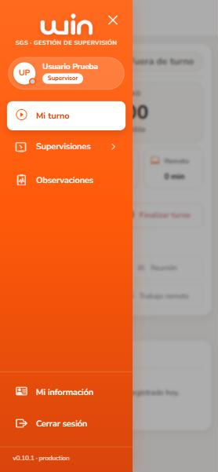
Menú abierto
3Mi turno
Tu jornada empieza y termina aquí. Sin turno iniciado no puedes registrar supervisiones.
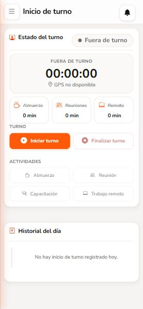
Antes de empezar: "Fuera de turno"
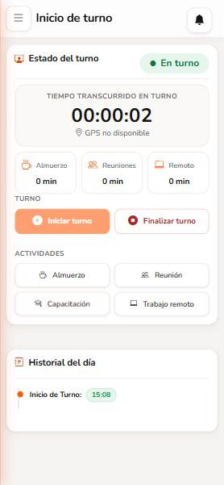
Con el turno iniciado: "En turno"
Toca Iniciar turno. Se guardan la hora y tu ubicación.
El estado cambia a En turno y empieza a correr el tiempo. En Historial del día queda la hora de inicio.
Registra tus actividades: AlmuerzoReuniónCapacitaciónTrabajo remoto. Toca el mismo botón al terminar cada una.
Al terminar tu jornada toca Finalizar turno.
Si olvidas finalizar el turnoEl sistema lo cierra solo a las 23:59, pero tus horas de ese día pueden quedar mal. Avisa a tu coordinador.
4Tus supervisiones y la bolsa de pendientes
+ Nueva supervisión: registrar una supervisión en campo.
Ver rutas: mapa con las pendientes de tu zona, numeradas desde la más cercana a ti.
Pestañas con su cantidad: Todas, En proceso, Finalizadas, Pendientes y En rescate.
Filtros: por pedido o ticket y por fechas. Limpiar los quita.
Cada orden se ve como una tarjeta: tócala para abrirla.
La bolsa común de pendientes
Las órdenes que carga el administrador (por ejemplo, cancelaciones) llegan como Pendientes a todos los supervisores directos de la zona. Mientras nadie la tome, en Responsable aparecen todos (por ejemplo "ROGER VASQUEZ / YELSIN RUIZ").
Quien la inicia, se la quedaAl iniciar una pendiente pasa a tu nombre y desaparece de la lista de tus compañeros. Si alguien la tomó un momento antes, el sistema te avisa: actualiza la lista.
Supervisiones en el celular
5Registrar una supervisión nueva
Toca + Nueva supervisión. El formulario tiene cinco secciones; ve bajando y completando:
Sección
Qué completar
1. Información general
Gestión, origen, segmento, modalidad (En caliente, En frío o Remota) y ubicación.
2. Identificación
Código de pedido o ticket.
3. Partner y cuadrilla
Partner, técnico líder (T1), técnico de apoyo (T2) y vehículo.
4. Resultado y evidencias
Ubicación GPS, hasta 3 fotos y el resumen.
5. Hallazgos
Opcional: un hallazgo o incumplimiento con detalle y fotos.
El botón de abajo te guíaEl botón fijo en la parte inferior te dice qué falta (por ejemplo, "Complete la sección 1") y cambia a Iniciar supervisión o Finalizar supervisión cuando corresponde. No necesitas bajar hasta el final para guardar.
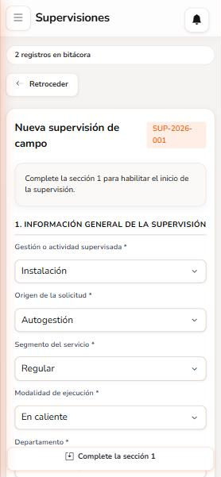
Sección 1 del formulario
Sección 3: partner, técnicos y vehículo
Elige el partner y busca al técnico líder (T1) escribiendo parte de su nombre. Su DNI se completa solo.
Al elegir el T1 salen su T2 y su vehículo habituales (tipo, placa y estado). Si hoy son otros, cámbialos.
El T2 se busca igual. Puede venir de otra cuadrilla o partner (se indica de dónde). Si no existe, elige "Registrar … como técnico de apoyo" y escribe su DNI.
La casilla "Guardar el T2 y el vehículo" (marcada) actualiza la cuadrilla del líder al cerrar la supervisión. Así, la próxima vez sale todo listo.
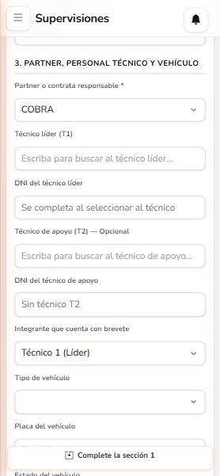
Partner, técnicos y vehículo
Sección 4: ubicación, fotos y resumen
Ubicación: se toma sola al abrir el formulario. El sistema escucha el GPS unos segundos y se queda con la lectura más precisa ("Afinando ubicación… ±X m").
En verde: precisión buena.
En amarillo: precisión baja. Sal a un lugar abierto y toca Actualizar ubicación.
En las supervisiones presenciales las coordenadas no se escriben a mano.
Fotos: hasta 3, tomadas con la cámara o de la galería. Se comprimen solas antes de subir: se ven igual y suben más rápido con datos. Al menos una es obligatoria para finalizar.
Resumen: lo verificado en campo. Obligatorio para finalizar.
Guardar y finalizar
Iniciar supervisión: la deja en proceso.
Guardar avance y volver al listado: si aún falta información.
Finalizar supervisión: cuando todo lo obligatorio está completo. Una supervisión finalizada ya no se modifica; solo el administrador puede corregirla.
Para continuar una supervisión en proceso, búscala en la pestaña En proceso y tócala.
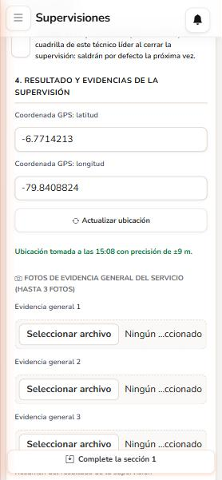
Ubicación tomada con ±9 m de precisión y fotos
6Supervisión remota (videollamada)
Cuando supervisas por videollamada, elige la modalidad Remota en la sección 1.
Solo se pide el partner: no hacen falta técnicos ni vehículo.
La ubicación se toma igual al iniciar, pero en la remota sí puedes corregirla a mano o pegar las coordenadas del cliente. Puedes pegarlas juntas, como las copia Google Maps (-8.139075, -79.055686), y se separan solas.
Para finalizar es obligatoria la captura de pantalla de la videollamada como foto de evidencia.
Cuenta para tu meta igual que una presencial.
7Validar una cancelación cargada
Las cancelaciones que carga el administrador llegan como Pendientes. Al abrir una ves su información de origen (ubicación, dirección, ticket, partner y tipificación), que no se modifica.
Abre la pendiente y toca Iniciar supervisión: pasa a tu nombre.
Ve al lugar, toma la ubicación, sube las fotos y escribe el resumen.
Elige el Resultado de la validación. Aparece en amarillo con la marca Pendiente hasta que lo elijas, y es obligatorio para finalizar.
Toca Finalizar supervisión.
Resultado
Qué pasa
Cancelación correcta
La cancelación está bien hecha: se valida y se finaliza.
En proceso de rescate
El servicio aún se puede recuperar. El botón cambia a Pasar a rescate y la orden queda a tu cargo (ver punto 8).
Rescate
Recuperaste el servicio en la misma visita: se finaliza como rescatada.
Si el botón dice "Seleccione el resultado de la validación"Te falta elegirlo. Al tocar el botón, el sistema te lleva al campo y lo marca en rojo.
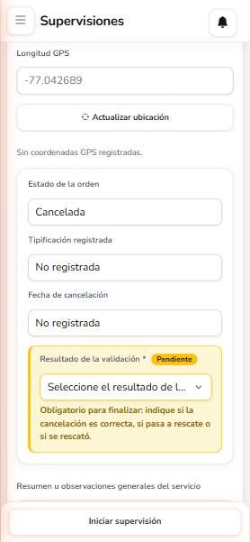
"Resultado de la validación" pendiente
8Rescate de una pendiente
Un rescate es el seguimiento de una orden cancelada que todavía se puede recuperar. Mientras está En rescate:
Aparece en la pestaña En rescate y es solo tuya (sale de la bolsa común).
No ocupa tu "supervisión en proceso": puedes seguir trabajando otras órdenes.
No tiene plazo. Registra cada gestión con Registrar avance (comentario y foto opcional). Todo queda en el historial.
Cerrar el rescate
Ciérralo con uno de estos dos resultados, con un comentario obligatorio:
Rescate: el cliente se quedó con el servicio.
Cancelación correcta: no se pudo recuperar; la cancelación queda validada.
Cuando lo propone el partner
Si asignaste una orden a un partner y su supervisor indica que se puede rescatar (con sus fotos), te llega un aviso. En la orden verás su propuesta y el botón Pasar a rescate: solo tú, que la asignaste, decides.
ReasignarSi no puedes seguir un rescate, el administrador puede pasarlo a otro supervisor de la zona.
9Asignar una pendiente a un partner
Puedes enviar una pendiente al supervisor de un partner para que la atienda.
En la tarjeta de la pendiente, toca Asignar Partner (puedes verlo en la captura de la sección 4).
Elige al supervisor del partner y confirma.
El partner tiene 24 horas para atenderla. Si vence el plazo, se bloquea y cuenta como incumplimiento del partner.
La orden sigue contando como tuya: tú asignaste y tú ves su atención (GPS, fotos y comentarios del partner).
Si el partner propone un rescate, tú decides (ver punto 8).
10Cuadrillas
Muestra cada técnico líder con su técnico de apoyo (T2), su vehículo, el estado del vehículo, cuántas supervisiones tiene y la última. Es solo de consulta.
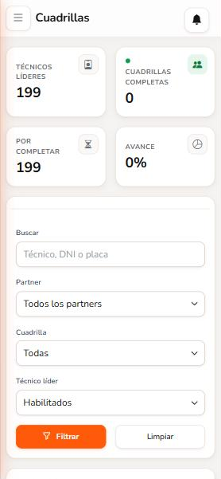
Indicadores y filtros
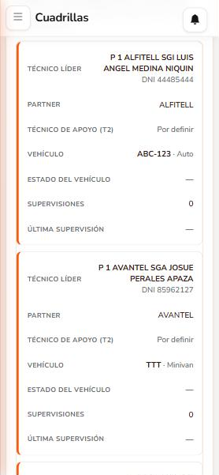
Cada cuadrilla como tarjeta
Las cuadrillas se completan solas: cada vez que cierras una supervisión con "Guardar el T2 y el vehículo" marcada, se actualiza la del técnico líder. Si el T2 o el vehículo pasaron a otra cuadrilla, salen de la anterior. Si ves un error, avisa al administrador: él puede corregirla.
11Observaciones
Aquí están los hallazgos registrados (desde la sección 5 del formulario o desde el checklist), con el descargo del partner y su plazo.
Elige el tipo: Todas, Checklist u Observaciones en campo (desliza las pestañas hacia los lados si no se ven todas).
Filtra por pedido o ticket, estado y fechas.
Descargar exporta la lista.
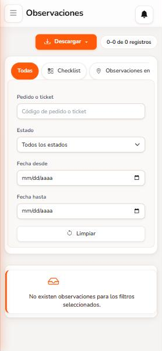
Observaciones
12Mi información y contraseña
Mi actividad: estado de tu turno, supervisiones de hoy y del mes, y las finalizadas. Ir a mi turno te lleva a Mi turno.
Foto de perfil: toca la cámara junto a tu foto, ajústala y guárdala.
Tus datos son de consulta. Si algo está mal, pide la corrección al administrador.
Cambiar contraseña: al final de la pantalla. Escribe la actual, la nueva (mínimo 10 caracteres, con letras y números) y repítela. La barra de seguridad te ayuda a elegir una fuerte.
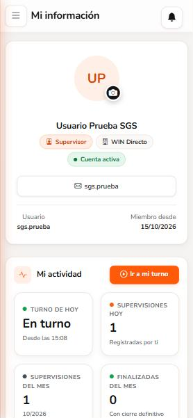
Mi información
13Preguntas frecuentes
Si te pasa esto…
Haz esto
"No puedes iniciar ni trabajar en una supervisión porque no has iniciado tu turno de hoy"
Ve a Mi turno y toca Iniciar turno.
"Ya tienes una supervisión en proceso"
Abre la pestaña En proceso, termínala y finalízala. Solo puedes tener una a la vez (los rescates no cuentan).
La ubicación sale con "precisión baja"
Sal a un lugar abierto, lejos de techos y edificios, espera unos segundos y toca Actualizar ubicación.
"El celular no dio permiso de ubicación"
Toca el candado junto a la dirección del sistema, permite la Ubicación y vuelve a intentar. Revisa también que el GPS del celular esté encendido.
El botón dice "Complete la sección 1"
Falta un dato obligatorio de la sección 1. Revisa los campos con asterisco (*).
El botón dice "Seleccione el resultado de la validación"
En una cancelación cargada, elige si es correcta, si pasa a rescate o si se rescató.
"Esta orden ya fue tomada por otro supervisor"
Un compañero la inició antes. Actualiza la lista y elige otra pendiente.
Me equivoqué en una supervisión finalizada
Pide la corrección al administrador. Él puede corregirla y sigue quedando a tu nombre.
Mi usuario quedó bloqueado
Comunícate con el administrador para que lo libere.
La pantalla se ve rara después de una actualización
Cierra la pestaña del navegador y vuelve a abrir el sistema.
¿Necesitas ayuda?Comunícate con tu coordinador o con el administrador del sistema. Indica siempre el código de la supervisión o el ticket y, si apareció un error, el código de seguimiento que muestra el mensaje.